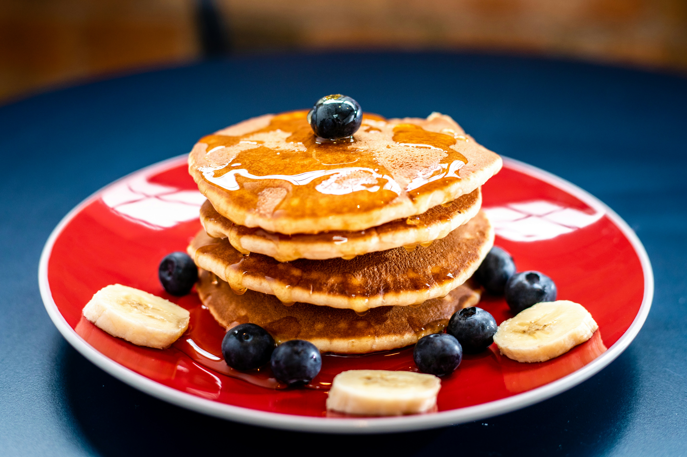

Pancake
Home

Description
Classic, fluffy homemade pancakes are quick to whip up using simple pantry ingredients.
Ingredients
- All-purpose flour: 1 ½ cups (181g)
- Baking powder: 1 tablespoon (the secret to fluffiness)
- Sugar: 2 tablespoons granulated white sugar
- Salt: ½ teaspoon kosher or table salt
- Milk: 1 ¼ cups (warm or room temperature)
- Egg: 1 large (room temperature)
- Melted butter: 4 tablespoons (unsalted or salted, slightly cooled)
- Vanilla extract: 1 teaspoon
Instructions
- Mix dry ingredients: In a large bowl, whisk together the flour, baking powder, sugar, and salt.
- Combine wet ingredients: In a separate medium bowl, whisk the milk, egg, melted butter, and vanilla extract until smooth.
- Bring together: Pour the wet mixture into the dry ingredients. Gently fold with a fork or spatula just until combined—a few small lumps should remain. Do not overmix, or the pancakes will turn out flat and heavy.
- Rest the batter: Let the batter rest on the counter for 10 to 15 minutes to allow the baking powder to activate.
- Cook: Heat a non-stick skillet or griddle over medium-low heat and lightly grease it with butter or oil. Pour about ¼ cup of batter per pancake.
- Flip and finish: Cook for 1.5 to 3 minutes until bubbles form on the surface and the edges look set. Flip carefully and cook for another 1 to 2 minutes until golden brown.